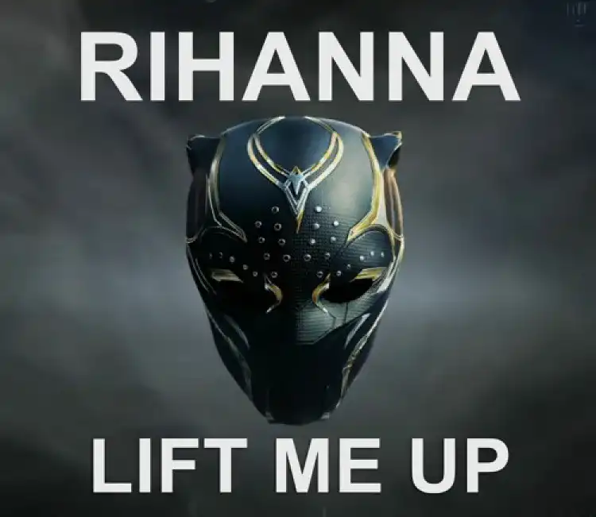
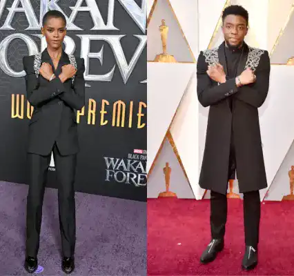
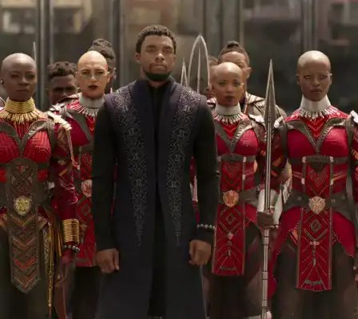
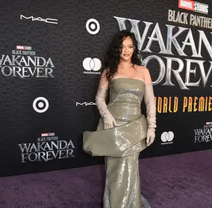

<!DOCTYPE html>
<html lang="en"x-data="{menuIsOpen: false}" :class="{noscroll:menuIsOpen}"></html>
<head>
    <meta charset="UTF-8">
    <meta http-equiv="X-UA-Compatible" content="IE=edge">
    <meta name="viewport" content="width=device-width, initial-scale=1.0">
    <link rel="stylesheet" href="../src/css/style.css">
    <link rel="alternate" hreflang="fr" href="http://architect.claudesamba.fr
    " />
<link rel="alternate" hreflang="es" href="http://architect.claudesamba.fr
" />
<link rel="alternate" hreflang="de" href="http://architect.claudesamba.fr
" />
    <script defer src="https://unpkg.com/alpinejs"></script>
    
    
    <title>Music</title>
   
    <link rel="icon" href="../public/icones/logo.svg" />
</head>

<body>
    <header class="header">
       
        <div class="header__logo-lang">
        <a href="../fr/index.html" onclick="document.cookie = 
        `nf_lang=en; path=/ ; SameSite=Strict`
        ">
          
        </a>
        </div>
        <div class="header__logo">
             <a class="header__link-logo" href="/en/index.html">KULTURE</a>
        </div>


        <button  class="header__menubtn menubtn" aria-controls="mainNav" @click="menuIsOpen = !menuIsOpen" :class="menuIsOpen &&'menubtn--open'" >
            <span class="menubtn__bar"></span>
        </button>

          <nav  id="mainNav" class="header__menu menu"  x-show="menuIsOpen" x-transition.duration.800ms >
             
                <a  class="page-title" href="../en/index.html">
                    KULTURE
                </a>
            

            <ul class="menu__list">

                <li class="menu__item">
                    <a  class="menu__link "href="movie.html">
                        Black Panther
                    </a>
                </li>


                <li class= "menu__item">
            <a class="menu__link "href="director.html">
                Ryan Coogler
            </a>
        </li>


        <li class= "menu__item">
            <a class="menu__link "href="music.html">
              Lift Me Up 
                 
            </a>
        </li>


        <li class= "menu__item">
            <a class="menu__link " href="book.html">
        A nation under our feet 
        </a>
    </li>


        <li class= "menu__item">
            <a class="menu__link " href="formulaire.html">
            Contact
        </a>
    </li>

      
    </header>


    <main>
        <h1 class="titre_article"> 
            When Music Becomes a Legacy - Lift Me Up</h1>
          <p class="date_publication"> By Claude MALANDA 
          </p> 
          
          <p class="date_publication"> Published on 24/10/2024, updated today at 9:45 AM
          </p>
         
          <div class="chapo">
              <p> Music has the power to touch our hearts deeply, and "Lift Me Up" is a perfect example. Extracted from the soundtrack of the film Black Panther II, it was performed by Rihanna in which she pays tribute to Chadwick Boseman.</p>
          </div>
        
        
    
        <p>The track was specially written for the sequel to Black Panther, crafted by a team under the guidance of Swedish producer Ludwig Grason, and written by the Nigerian artist Tems. In an interview, Tems explains what lies behind this song.</p>
 
     <div class="section_clair">
    
        <div class="image-container">
     
    </div>
    
    <p>"Lift Me Up" has become a moving tribute to Chadwick Boseman, who portrayed the character of Black Panther in the first film and passed away in 2020 from cancer. He was an actor whose work contributed to breaking barriers and inspiring many, particularly underrepresented communities. The song served to recall the actor's talent, influence, and positive impact on numerous lives while celebrating his cinematic legacy.</p>

    </div>
    
    <div class="image-container">
    
    </div>
    
    <p>This song shows that superheroes not only wear capes but can embody values such as compassion and respect for traditions.</p>

    <p>The lyrics reflect the need for support and finding light in the dark moments of life. It also expresses the deep desire for love and comfort.</p>
   
      <div class="section_clair">
    
        <div class="image-container">
        
       </div>
       <p>Rihanna's interpretation is in perfect harmony; her voice conveys the full range of emotion in the lyrics, hence this song touches many hearts and souls around the world.</p>

       <p>The song also speaks to connecting with those we have lost; expressing how much we miss them and finding comfort in their memory.</p>

       <p>Furthermore, the song has been included in the soundtrack of the film "Black Panther: Wakanda Forever," reinforcing its connection to the Wakanda universe and the character of Chadwick Boseman. This inclusion in the soundtrack contributes to the emotion and depth of the story, making "Lift Me Up" a precious musical and cinematic legacy.</p>
  
       <p>This article might interest you: Rihanna is nominated for the Oscars for the first time thanks to her song Lift Me Up</p>
   </div>
    
    <h2>Listen to Lift Me Up</h2>
    
    <audio controls>
        <source src="../public/video/Rihanna.mp3" type="audio/mp3">
       
    </audio>
    
    </main>
    
</main>
<footer class="footer">

    <div class="menu--separation">
      <span class="menu__barresep"></span>
  </div>

    <div class="footer-colum">
        

        <div class="menu__container">
            <p class="footer__texte">Claude MALANDA</p>
            <a class="footer__mail" href="mailto:claude.malamda_samba@edu.univ-fcomte.fr">claude.malamda_samba@edu.univ-fcomte.fr</a>

            <div class="reseau">
                <a href="#">
                    
                </a>
                <a href="#">
                    
                </a>
                <a href="#">
                    
                </a>
            </div>
        </div>
   

    
        <div class="footer_p">

          
            <p><a class="footer__lien-title" href="../en/about.html">About</a>
            </p>
            
           <p><a class="footer__lien-title"  href="../en/about.html">Glossary</a></li>
           </p> 
            <p><a class="footer__lien-title"   href="../en/other.html">Other projects</a>
           </p>

        
           
        </div>
</div>
        <p class="footer__p">
          Project carried out as part of an educational exercise at the
            <a class="footer__link" href="http://mmimontbeliard.com/contact">
              Montbéliard MMI department
            </a>
        </p>
    
</footer>

</body>
</html>